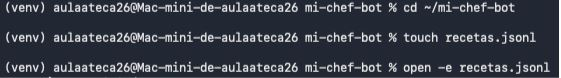
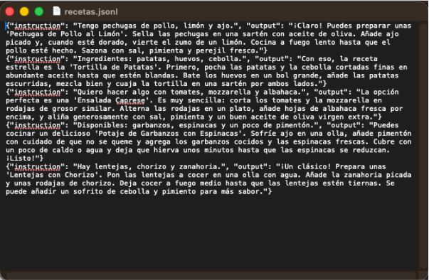
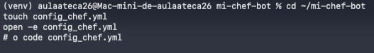
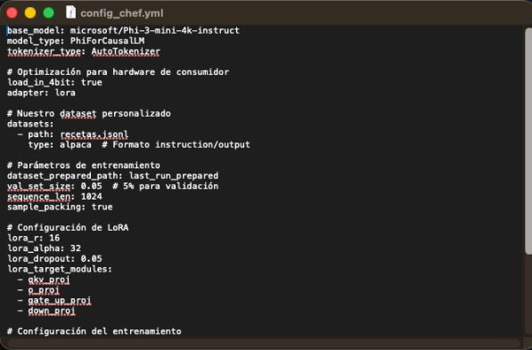
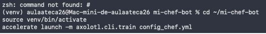

En esta práctica he documentado el proceso de diseño y configuración para entrenar un LLM especializado. El objetivo era crear "Chef-Bot", un asistente basado en el modelo Phi-3-mini capaz de sugerir recetas a partir de ingredientes, utilizando la herramienta de entrenamiento Axolotl.
Comencé creando la estructura del proyecto. Generé una carpeta dedicada mi-chef-bot y activé el entorno virtual para gestionar las dependencias de Python. También creé los archivos vacíos necesarios para el dataset y la configuración.

Para especializar al modelo, creé manualmente el archivo recetas.jsonl. Seguí el formato estándar de instrucción/respuesta (instruction / output). Como se ve en la captura, diseñé ejemplos donde el usuario da ingredientes (ej: "pollo, limón, ajo") y el bot responde con una receta completa paso a paso.

El núcleo de la práctica fue configurar el archivo YAML para Axolotl. En él definí:
microsoft/Phi-3-mini-4k-instruct.recetas.jsonl.load_in_4bit: true para poder entrenar en hardware de consumo.

Finalmente, intenté lanzar el proceso de entrenamiento utilizando la librería accelerate apuntando a mi archivo de configuración.

Resultado: La configuración del modelo, el diseño del dataset y la parametrización de LoRA se completaron correctamente según las especificaciones. Sin embargo, el proceso de entrenamiento no pudo finalizarse debido a problemas de dependencias en el entorno local (error en la detección del comando o librerías incompatibles con la arquitectura M4).
A pesar del error de ejecución final, la estructura lógica para crear el LLM está lista y verificada.